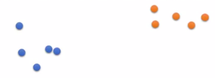
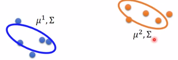
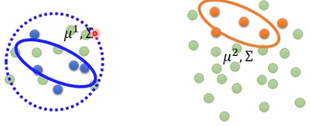

在半监督学习的框架下，产生的未标记样本和中的标记样本都用于估计或者根据预测。
[success]
半监督学习是指：
P(x)和P(x,y)都用于产生P(y|x)
其中：
P(x)是未标记样本
P(x,y)是标记样本
P(y|x)是根据x预测y。
在深度学习的背景下，半监督学习通常指的是学习一个表示 。 学习表示的目的是使相同类中的样本有类似的表示。 无监督学习可以为如何在表示空间聚集样本提供有用线索。
[success] 李宏毅课程中有这样一个例子
假设有这样一组二分类的labelled data。

假设两个类型的数据都符合高斯分布,本例中会得出这样的分布：

此时又来了一组unlabelled data，可以基于unlabelled data校正模型。

在输入空间紧密聚集的样本应该被映射到类似的表示。 在许多情况下，新空间上的线性分类器可以达到较好的泛化\citep{Belkin+Niyogi-2002,Chapelle+al-2003}。 这种方法的一个经典变种是使用主成分分析作为分类前（在投影后的数据上分类）的预处理步骤。
[success]
传统方法：
使用监督学习对P(x,y)建模。
使用无监督学习（例如PCA）对P(x)和P(x,y)对x聚类。
我们可以构建这样一个模型，其中生成模型或与判别模型共享参数，而不用分离无监督和监督部分。
[warning] 具体过程没看懂。 后面全部没看懂。
DL方法使用共享参数，而不用分离无监督和监督部分。
我们权衡监督模型准则 和无监督或生成模型准则（如或）。 生成模型准则表达了对监督学习问题解的特殊形式的先验知识\citep{LasserreJ2006}，即的结构通过某种共享参数的方式连接到。 通过控制在总准则中的生成准则，我们可以获得比纯生成或纯判别训练准则更好的权衡\citep{LasserreJ2006,Larochelle+Bengio-2008-small}。
\cite{Russ+Geoff-nips-2007}描述了一种学习回归核机器中核函数的方法，其中建模时使用的未标记样本大大提高了的效果。
更多半监督学习的信息，请参阅\cite{Chapelle-2006}。